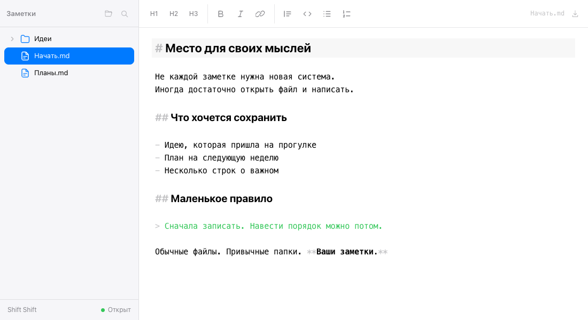

Писать и редактировать
Добавляйте заголовки, списки, ссылки и код с помощью кнопок над текстом или привычной разметки Markdown.
Для заметок, которые вы храните в файлах. Откройте свою папку, выберите заметку и начните писать.

Добавляйте заголовки, списки, ссылки и код с помощью кнопок над текстом или привычной разметки Markdown.
Папки и заметки видны слева. Файлы можно перетаскивать между папками, переименовывать и удалять.
Дважды нажмите Shift и введите название или слова из текста. Поиск работает по всей открытой папке.
Выберите файл в боковой панели, чтобы посмотреть его в том же окне. Возвращайтесь к заметке одним нажатием.
В Chrome Open Notes запоминает открытую папку и файл. При следующем запуске нажмите «Продолжить».
Установите Open Notes и запускайте из Dock. Тема меняется вместе с темой Mac.
Регистрация не нужна. Вы работаете со своими Markdown-файлами и можете открыть их в другом редакторе в любой момент.
В Chrome откройте папку и разрешите изменение файлов. После этого правки сохраняются автоматически в исходные файлы.
В Safari и других браузерах без записи в исходные файлы нажимайте «Скачать», чтобы сохранить отредактированную заметку. Перемещение, переименование и удаление в этом режиме действуют только внутри приложения; файлы на диске остаются прежними.